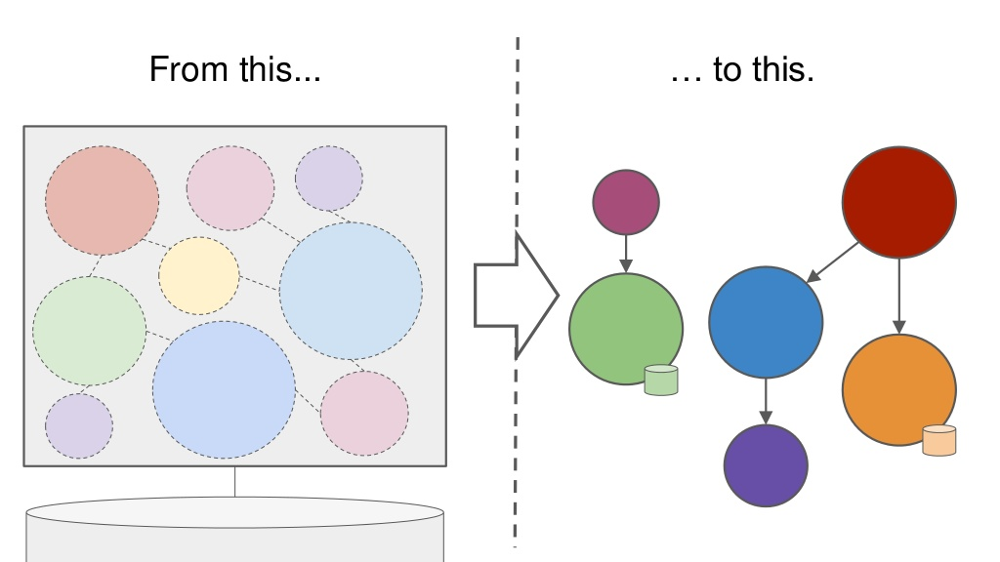
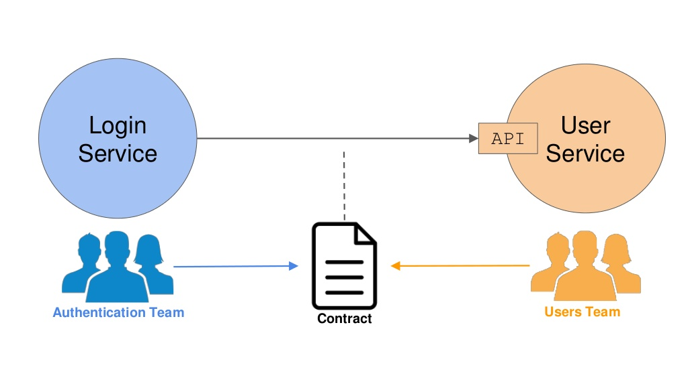

Introduction to CDC Testing
In order to countiniously and independently deploy software, the microservice architecture became state of the art for large scale enterprise applications.

- Monolith: detect breaking changes at compile time
- Micorservice: detect breaking changes at runtime
Imagine the following situation:
Provider changes his interface, refactors, refactors tests as well, everything green
In the providers CI/CD pipline, all tests are passing
GO FOR Production!
Monitoring shows no Errors for the ProviderService
But suddenly the ConsumerService fails every request...
Blaming starts...
Maybe we should have tested this...
But how?
Obvious Solution: Service Tests
Start the frontend. Start other consumed services. We need test data. In addition, we need tokens, certificates, authentication, ...
What a nightmare! This results in a full E2E test. But we only wanted test the interaction between the two services.
We want to know very early and fast that we break something.
Contracts come into play

The Pact Framework offers CDC testing implementations for most languages (Java, Javascript, Ruby, Swift, Android, Go).
Provider Workflow
Goal: Don't deploy breaking changes
- Implements Changes
- Get contracts from all consumers
- Replay and verify interactions - Stop introduction of breaking change very early
- Deploy service
Consumer Workflow
Goal: Dont consume resources which are not provided
- Implement changes
- Generate contract
- Push contract to provider
- Each provider verifies contracts
- Deploy service
TIP
Use the Tolerant Reader Pattern as a verification philosophy (unnecessary fields are ignored)